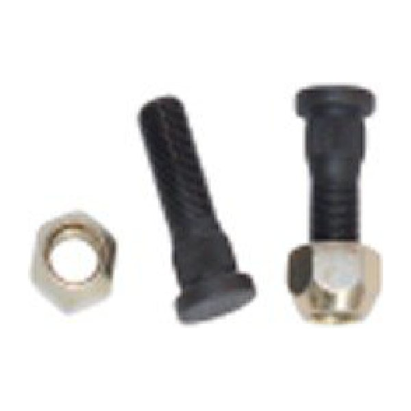

Parts › Hardware: Bolts, Nuts & Washers › 34B2411221

Available
Email for a quote
Komatsu 34B2411221 Wheel Bolt
| OEM part number | 34B2411221 |
| Fits | Komatsu |
| Category | Hardware: Bolts, Nuts & Washers |
| Type | Aftermarket replacement |
Send us the quantity you need and we'll reply with pricing, usually within 24 hours. Not the exact part? We can source it. Send the part number or a photo.